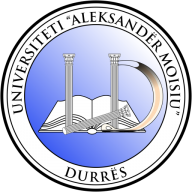

Bachelor of Medicine and Bachelor of Surgery
Bachelor’s degreeDetails ↗
Read the welcome message from Dr. Charity Basaza Mulenga, Vice Chancellor of King Ceasor University.
Search a featured selection of KCU programmes, or visit the full catalogue for all study options.
Confirm programme availability, entry requirements and fees with Admissions before applying.
Explore study pathways focused on people, health and the life sciences.
Explore the school →Develop your interests in justice, enterprise, economics and leadership.
Explore the school →Discover pathways into technology, investigation and the natural world.
Explore the school →Find your field of study and discover the academic options available to you.
Explore academics →Held at the University Rooftop, Main Campus, Bunga Hill under the theme “Hope Beyond Despair”, bringing together students and health professionals to promote early detection.
More news →Review the admission requirements and prepare your academic documents before you apply.
Admission guidance →Quick self-help answers about applying to King Ceasor University. Can’t find what you need? Our team is happy to help.
Use the applicant portal on the Apply page. Prepare your academic documents, identity details and programme choice before you start.
KCU offers degree, diploma, certificate and short courses across the Schools of Health, Law and Science. Browse them on the Programmes page.
Requirements depend on the programme level. See the Admissions page for the documents and qualifications needed.
Official programme fees and payment guidance are published on the Fees page.
Use the Academia portal, K-Class online learning and the Library links in the top bar of every page.
King Ceasor University is at Plot 32 Ggaba Road, Bunga Hill, Kampala, Uganda. Contact the university before travelling if you need help finding a particular office.
Published vacancies are listed on the Careers page.
KCU partners with leading institutions across Africa, Europe, Asia and the Americas.

Plot 32 Ggaba Road
Bunga Hill, Kampala, Uganda